Ce tutoriel est-il là pour nous informer que l'on peut faire des programmes avec du HTML ?
Suite aux nombreux commentaires, je me dois d'éclaircir de nombreux points.
On ne peut pas insérer de PHP dans ces applications HTML : un fichier *.hta (entendez HTml Application) est interprété sur un serveur comme un simple fichier, au même titre qu'une image. Par contre, des solutions existent, si on se tourne vers AJAX, en envoyant des requêtes à un serveur qui va servir d'intermédiaire en créant le code avec PHP, puis en renvoyant le contenu fini à l'HTA. Voir commentaire.
Les sessions sont impossibles à utiliser, une HTA étant un simple interpréteur de code. Par contre, grâce à Javascript, vous pouvez utiliser les cookies.
Il est impossible de lancer une HTA depuis un site web, le navigateur n'interprétant pas ce genre de choses (le fichier serait soit proposé au téléchargement, soit affiché comme un simple fichier texte). Il faut aussi penser à la sécurité de l'internaute : si cela était possible, des codes malveillants se lanceraient assez facilement (ce qui était le cas dans les versions antérieures à IE 5) >_ . Heureusement, à ma connaissance, cela est désormais impossible, cependant il existe un procédé pour générer une HTA sur un site puis proposer son téléchargement : le type mime application/hta. Je vous laisse imaginer son potentiel couplé à PHP.
Par contre, d'une HTA on peut en lancer une autre. En effet, nous verrons cela ultérieurement.
Bon, comme je vous le disais plus haut, seul Windows peut lire les fichiers HTA.
Le pourquoi de la chose est le suivant : ce fichier s'ouvre non pas avec votre navigateur web, mais avec un programme fourni avec Windows et qui n'équipe que lui : Mshta.exe. Ce programme utilise ensuite IE 4 (et plus) comme "moteur" d'analyse du code source.
Apparence d'une application HTML
Je vous ai fait une petite capture d'une HTA dont j'ai modifié volontairement les dimensions (afin qu'ici elle ne prenne pas trop de place).
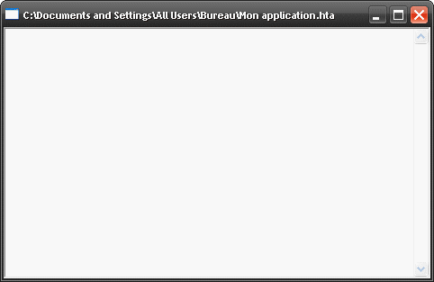
Capture d'écran d'une HTA nommée «Mon application»
Vous pouvez désormais comprendre pourquoi on parle d'«application», mais il n'en est rien.
Lors de son ouverture, son adresse apparaît dans la barre de titre ainsi que son extension, qui est hta (à vrai dire, ça ne doit pas vous étonner).
Création d'un fichier HTA
Pour créer un fichier *.hta, ouvrez votre éditeur (exemple : Bloc-notes), et enregistrez-le comme ce qui suit (avec les guillemets) :
"test.hta"
Bien sûr, vous pouvez remplacer le nom test par autre chose. N'oubliez surtout pas de choisir : Tous les fichiers en face de Type, c'est important.
Cliquez ensuite sur Enregistrer et pof ! votre fichier HTA avec une icône toute moche de programme apparaît là où vous l'avez enregistré. Vous pouvez l'ouvrir par double-clic, mais rassurez-vous : ce qui en résultera n'est que le strict minimum.
Dans une prochaine sous-partie, je vous parlerai de la spécificité principale d'une HTA : sa propre balise à intégrer dans son code source et qui va lui donner des possibilités de configuration phénoménales !
Les possibilités des HTA
Avez-vous toujours le fichier test.hta que nous venons de créer ? Vous devriez normalement voir l'icône toute moche (c'est bien la vérité, ne nous le cachons pas).
Bien, cliquez droit dessus et ensuite sur Modifier si vous en avez la possibilité, sinon, cliquez sur Ouvrir avec, et sélectionnez votre éditeur de texte (exemple : Bloc-notes). Vous devriez ensuite vous retrouver devant une page toute blanche.
Pourquoi la page est-elle toute blanche ?
Lorsque l'on a créé le fichier tout à l'heure, on a créé directement le HTA avec l'éditeur, mais nous n'y avions rien écrit.
Maintenant, écrivez-y du texte, du HTML, et enregistrez. Puis, actualisez votre application HTML (appuyez sur la touche F5 de votre clavier ou clic droit -> Actualiser), et l'HTA changera son contenu comme par magie (c'est la même chose avec les pages web :-° ).
Maintenant, nous allons égayer ces applications qui sont moches (il vous faudra connaître le HTML dont M@teo21 a fait un tutoriel. Attention cependant : une HTA requiert du HTML, et non du xHTML).
<HTML>
<HEAD><TITLE>Test HTA pour le site du Zér0</TITLE></HEAD>
<BODY><SPAN STYLE="color:blue">Voici une HTA égayée avec une jolie phrase bleue.</SPAN></BODY>
</HTML>
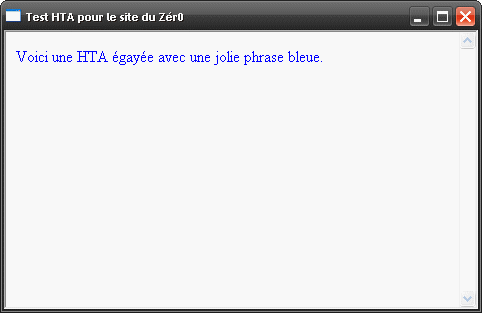
Résultat du code
Allez-y, tentez de modifier le vôtre et regardez le résultat, essayez de mettre des tableaux, des boutons, des images, une couleur de fond, etc.
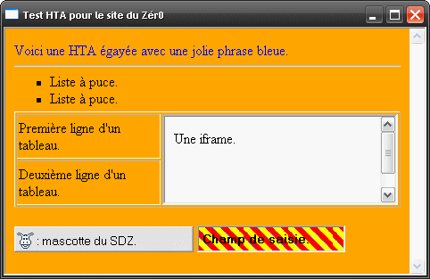
Une capture d'écran de l'application égayée avec du HTML
Vous voyez ? On peut en faire autant que dans des pages normales, mais on peut encore en faire plus grâce à... la balise HTA, qui est la spécialité de ce type de fichier, et dont je vais vous parler dans le sous-chapitre suivant. Hue dada !
Vous êtes encore là ? o_O Super ! Voilà à quoi ressemble la balise HTA :
<HTA:APPLICATION>
Bien sûr, si vous l'introduisez dans votre code, cela ne donnera rien, car il faut lui donner des attributs que je vais vous lister et expliquer par la suite :
Vous trouvez que ça fait beaucoup ? Ne vous en faites pas, je vais vous les expliquer tranquillement; vous aurez même droit à un QCM à la fin.
L'attribut CAPTION
CAPTION sert à dire si oui ou non la barre de titre doit apparaître.
Valeurs autorisées : Yes ou No.
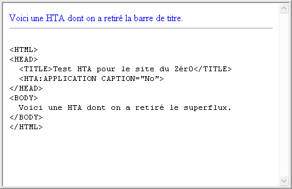
Avec la propriétéCAPTION="No", la barre de titre disparaît.
Comment dois-je faire pour fermer désormais ?
Il faut appuyer sur les touches Alt et F4 de votre clavier en même temps, après avoir mis le HTA en activation (vérifiez que dans la barre des tâches, en bas, le bouton du hta est enfoncé). Le fichier disparaîtra avec la combinaison de ces touches magiques. ^^
L'attribut ID
Sert à donner un nom au HTA pour pouvoir ensuite lire les attributs de la balise HTA.
Valeurs autorisées : toutes, sauf les noms réservés de Javascript comme window ou document.
L'attribut ID sera donc le nom que vous voulez donner à votre HTA. Vous pourrez par la suite lire la plupart de ses attributs :
<HTML>
<HEAD>
<TITLE>Test HTA pour le site du Zér0</TITLE>
<HTA:APPLICATION ID="MonProg" CAPTION="Yes">
<SCRIPT TYPE="text/Javascript">
alert('Valeur de CAPTION : ' + MonProg.CAPTION);
</SCRIPT>
</HEAD>
<BODY>Mon texte.</BODY>
</HTML>
L'attribut APPLICATIONNAME
APPLICATIONNAME est tout simplement le nom que vous voulez donner à votre application pour permettre l'utilisation de SINGLEINSTANCE par la suite (nous verrons ça plus tard).
Toutes les valeurs sont autorisées.
<HTA:APPLICATION APPLICATIONNAME="Programme du site du Zér0">
L'attribut BORDER
Permet de définir l'épaisseur (la largeur) de la bordure du HTA (grosse, style boîte de dialogue, inexistante ou fine).
Valeurs autorisées : thick, dialog, none ou thin.
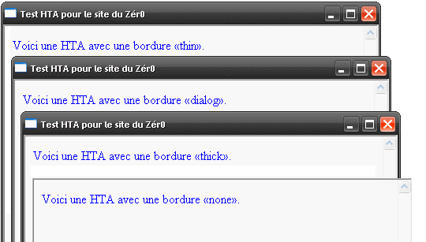
Les différentes largeurs de bordure
Admettons quand même que l'épaisseur des bordures ne nous sert pas à grand-chose ^^ .
L'attribut ICON
Permet de donner une icône à son application.
Tous les noms d'icônes sont autorisés.
Alors là, ça devient intéressant ! Il faudra que l'application soit dans le même dossier que l'icône.
Vous pouvez aussi mettre une image bitmap, mais il vaut mieux quelque chose d'approprié, et donc ne pas trop s'éloigner d'un simple fichier *.ico. Si vous ne savez pas créer d'icône, vous pouvez télécharger PhotoFiltre, qui permet aussi de créer des icônes à partir d'autres images... dans Outils -> Exportation en icône.
<HTML>
<HEAD>
<TITLE>Test HTA pour le site du Zér0</TITLE>
<HTA:APPLICATION ICON="icone.ico">
</HEAD>
<BODY>
<SPAN STYLE="color:blue">Voici une HTA avec une icône.</SPAN>
</BODY>
</HTML>
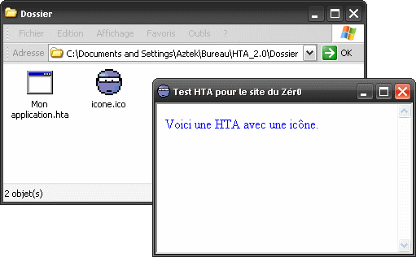
Si Windows ne trouve pas le nom de l'application, il le cherchera alors dans le même dossier que le fichier HTA.
L'attribut SHOWINTASKBAR
Permet de dire si oui ou non le HTA doit apparaître dans la barre des tâches.
Yes ou No.
Si on traduisait mot à mot SHOWINTASKBAR, en français, ça voudrait dire : VoirDansTâchesBarre ; avec cet attribut, on peut voir l'application dans la barre des tâches - vous savez, cette barre tout en bas de votre écran qui sert à se déplacer de programme en programme, et où ceux-ci sont représentés par des moutons boutons !
SHOWINTASKBAR="Yes"
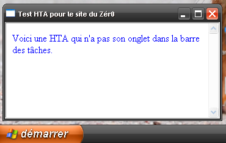
SHOWINTASKBAR="No"
Si on réduit l'HTA alors que la valeur de SHOWINTASKAR est "No", l'application sera réduite sur le bureau en bas à gauche :
L'attribut SINGLEINSTANCE
Permet de n'ouvrir qu'une seule fois l'HTA.
Attributs autorisés : Yes ou No.
Bon : avant, si vous ouvriez l'application deux fois, elle s'ouvrait deux fois ! Logique, non ? Maintenant, si on met l'attribut SINGLEINSTANCE="Yes", le fichier ne pourra s'ouvrir qu'une seule fois ! Faites l'essai : vous verrez qu'à chaque fois, l'application ne s'ouvre qu'une seule fois. En français, on pourrait traduire par «une seule instance».
L'attribut SYSMENU
Fait disparaître les éléments de la barre de titre, autres que le titre.
Attributs autorisés : Yes ou No.
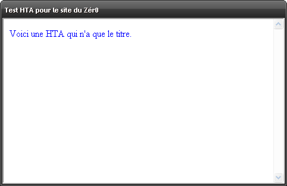
L'attribut WINDOWSTATE
Définit l'état d'initialisation de l'application.
Normal, Maximize, ou Minimize.
Cet attribut permet de définir dans quelle position l'application devra s'ouvrir (soit en position normale, agrandie ou réduite).
L'attribut SCROLL
Détermine si la barre de défilement doit apparaître.
Valeurs autorisées : Auto, Yes ou No.
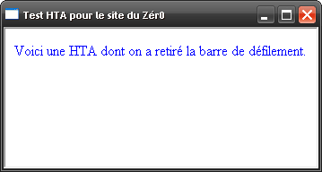
L'attribut SCROLLFLAT
Indique si la barre de défilement doit être plate ou en relief.
Valeurs autorisées : Yes ou No.
Alors là, personnellement, chez moi je ne vois pas de différence, mais cet attribut existe, comme le dit le MSDN. Il paraît que ça fait beau sous Windows 98, et que c'est mieux que les barres normales de défilement. :D
L'attribut VERSION
Version de votre HTA.
Valeurs autorisées : "chiffre.chiffre". Exemple : première version : 1.0, rectificatifs : 1.1, 1.2, deuxième version : 2.0, etc.
L'attribut INNERBORDER
Indique si oui ou non la bordure intérieure doit apparaître.
Valeurs autorisées : Yes ou No.
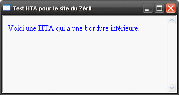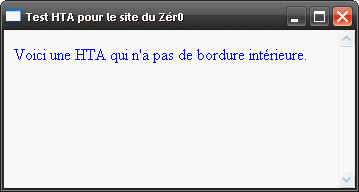
L'attribut SELECTION
Permet de désactiver la possibilité de sélectionner le texte de l'application.
Valeurs autorisées : Yes ou No.
L'attribut CONTEXTMENU
Sert à désactiver le clic droit dans l'application. La touche "menu contextuel" de votre clavier le sera aussi.
Valeurs autorisées : Yes ou No.
L'attribut MAXIMIZEBUTTON
Permet de désactiver le bouton Agrandir.
Valeurs autorisées : Yes ou No.
<HTA:APPLICATION MAXIMIZEBUTTON="No">
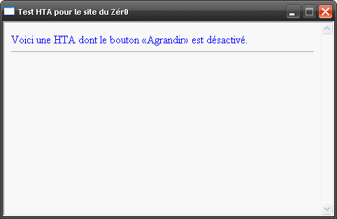
L'attribut MINIMIZEBUTTON
Permet de désactiver le bouton Réduire.
Valeurs autorisées : Yes ou No.
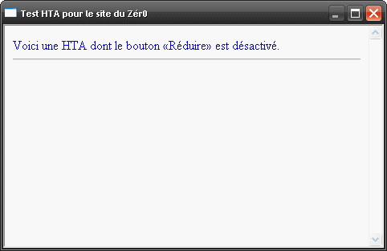
L'attribut NAVIGABLE
Définit si oui ou non on peut "naviguer" dans l'application à l'aide de liens.
Valeurs autorisées : Yes ou No.
Si la valeur est No, le lien sera ouvert dans une autre fenêtre avec le navigateur internet par défaut de votre ordinateur. Sinon, le lien sera ouvert directement par l'application dans la même fenêtre.
L'attribut BORDERSTYLE
Définit le style de la bordure.
Valeurs autorisées : normal, complex, raised, static, ou sunken.
Tout à l'heure, nous avons vu l'attribut BORDER qui définissait la largeur de la bordure externe. L'attribut BORDERSTYLE quant à lui est tout simplement le style de la bordure, mais de la bordure interne : plate, en relief (3D), etc. Le style static est un cas à part, puisque la bordure externe s'amincit quand même.
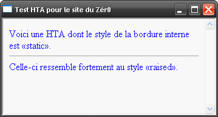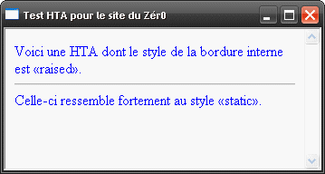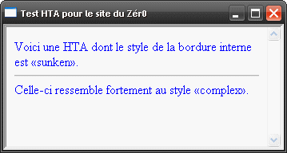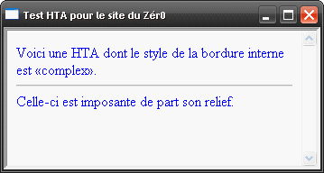
BONUS n°1 : COMMANDLINE
Ce n'est pas un attribut, mais grâce à lui et à Javascript, on peut récupérer l'adresse absolue de l'application avec l'attribut ID.
Valeur : adresse de l'application se trouvant sur votre ordinateur.
<HTML>
<HEAD>
<TITLE>Test HTA pour le site du Zér0</TITLE>
<HTA:APPLICATION ID="MonProg">
<SCRIPT TYPE="text/Javascript">
<!--
alert(MonProg.commandLine);
//-->
</SCRIPT>
</HEAD>
<BODY>
<SPAN STYLE="color:blue">Voici une HTA dont on récupère l'adresse absolue.</SPAN>
</BODY>
</HTML>
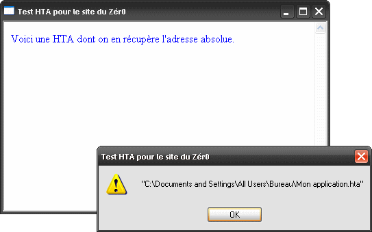
BONUS n°2 : MAXIMIZEBUTTON + MINIMIZEBUTTON
Si nous avions choisi MAXIMIZEBUTTON et MINIMIZEBUTTON avec la valeur "No", ça aurait donné :
Dans les sous-parties précédentes, je vous ai montré une partie importante de la puissance des applications HTML, mais si l'on réfléchissait un peu plus et si l'on mettait des <FRAME> et des <IFRAME>, alors le code qui serait dans l'iframe ne serait peut-être pas le vôtre, il pourrait contenir du code qui, entre autres, serait source de popups involontaires, de virus, troyens, ou spywares, et cela à votre insu.
Pour renforcer leur sécurité, il vaut donc mieux :
éviter de placer des sites inconnus, ou même d'en placer avec des balises <IFRAME>, <FRAMESET> ;
utiliser l'attribut NAVIGABLE="No" de la balise <HTA:APPLICATION> ;
utiliser l'attribut APPLICATION="No" sur les balises de cadres (iframes, frames). o_O
APPLICATION="No"
Permet de définir ou non, au cadre qui aura cet attribut, les règles de sécurité du navigateur par défaut.
Valeurs autorisées : Yes ou No.
<HTML>
<HEAD>
<TITLE>Test HTA pour le site du Zér0</TITLE>
<HTA:APPLICATION NAVIGABLE="No">
</HEAD>
<BODY>
<SPAN STYLE="color:blue">Voici une HTA comportant une iframe. Venez donc visiter <A HREF="http://www.siteduzero.com">le site du Zér0 !</A>.</SPAN><HR>
<IFRAME SRC="http://adresse-xyz.fr/ma_page.html" APPLICATION="No" STYLE="width:100%;height:180px"></IFRAME>
</BODY>
</HTML>
Le Javascript c'est fantastique, le caoutchouc super doux...
Les parties suivantes seront constituées d'exemples de codes sources d'applications HTML portants sur des techniques nouvelles diverses permettant d'utiliser au mieux ces applications. Par conséquent, ces parties ne seront pas à vrai dire hyper-détaillées en ce qui concerne les explications du code.
Avec Javascript, donc, on peut entre autres utiliser les fonctions moveTo() et ResizeTo(), qui permettent de bouger et de redimensionner la fenêtre de l'application concernée. Testez donc ces codes et modifiez-les pour les apprivoiser !
<HTML>
<HEAD>
<TITLE>Test HTA pour le site du Zér0</TITLE>
<HTA:APPLICATION NAVIGABLE="No">
<SCRIPT TYPE="text/Javascript">
window.resizeTo(482,313);
window.moveTo(0,350);
</SCRIPT>
</HEAD>
<BODY>
<SPAN STYLE="color:blue">Voici une HTA comportant une iframe. Venez donc visiter <A HREF="http://www.siteduzero.com">le site du Zér0 !</A>.</SPAN><HR>
<IFRAME SRC="http://adresse-xyz.fr/ma_page.html" APPLICATION="No" STYLE="width:100%;height:180px"></IFRAME>
</BODY>
</HTML>
On n'est pas obligé d'insérer la balise <HTA:APPLICATION>, mais essayons tout de même avec un CAPTION="No" : l'application est là encore redimensionnée, puis repositionnée. :D
Javascript : les ActiveX
ActiveX est un ensemble de ressources provenant de Microsoft et permettant d'accomplir une multitude de choses dans l'environnement Windows : lire, écrire, créer un fichier, accéder au registre, etc.
// Tout d'abord, il faut créer l'objet ActiveX permettant par la suite d'accéder aux fichiers.
manipuleFichiers = new ActiveXObject("Scripting.FileSystemObject");
// Créons désormais un fichier texte vide à la racine du disque C.
manipuleFichiers.CreateTextFile("c:\\mon_fichier.txt", 2);
// Nous pouvons y écrire du texte.
Fichier = manipuleFichiers.OpenTextFile("c:\\mon_fichier.txt", 2);
Fichier.Write("Mon texte, première ligne \nMon texte, deuxième ligne \nMon texte, troisième ligne");
// La méthode WriteBlankLines ajoute un nombre de lignes vides à la suite du fichier. Dans notre cas, elle ne nous sert à rien.
Fichier.WriteBlankLines(1);
// Nous pouvons lire les fichiers.
Fichier = manipuleFichiers.OpenTextFile("c:\\mon_fichier.txt", 1);
alert("Contenu du fichier texte : \n\n" + Fichier.ReadAll());
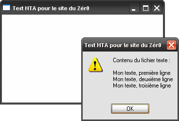
ActiveX permet donc de créer, modifier, et lire un fichier, mais il permet aussi la modification du registre du système (démarrer -> Exécuter -> regedit). Je vous ai trouvé une application HTML pour vous prouver la puissance de celui-ci : Secure.hta.
Avec Javascript, on peut alors facilement imaginer une application de conversation à plusieurs (en réseau local) ou alors mieux : un post-it. :)
BONUS n°3 : forcer la fermeture de l'application
Si le besoin d'utiliser CAPTION="No" sur une application HTML se fait sentir mais que tous les utilisateurs ne connaissent malheureusement pas l'astuce que je vous ai fournie tout à l'heure (afin de fermer celle-ci), proposer un bouton de fermeture pour l'application est recommandé ! J'ai la solution : un bout de code Javascript, qui est d'ailleurs assez connu.
Par défaut, une application HTML a pour thème graphique Windows 95-98, c'est-à-dire que ses boutons sont carrés et tout gris. Il y a cependant moyen de changer cela, et je remercie beaucoup spider-mario pour m'avoir fait découvrir cette fonctionnalité.
De plus, si vous cherchez à imiter de véritables programmes Windows, le code couleur hexadécimal #EBE9ED se rapproche fortement de la couleur utilisée pour leur fond, pensez à l'utiliser !
VisualBasic Script
Avec le VBScript, nous pouvons également faire des choses comme créer, supprimer, afficher les fichiers d'un dossier, les modifier, mais je n'en suis pas un expert.
<HTML>
<HEAD>
<TITLE>Test HTA pour le site du Zér0</TITLE>
<SCRIPT TYPE="text/VBScript">
<!--
DIM MotDePasseSaisi, MotDePasse 'On déclare les variables pour mieux les appeler ensuite.
MotDePasse = "motdepasse" 'On attribue la valeur du mot de passe à la variable de référence.
MotDePasseSaisi = InputBox("Insère donc ton mot de passe !","Protection par mot de passe") 'On récupère le mot de passe, et on le stocke.
-->
</SCRIPT>
<SCRIPT TYPE="text/Javascript">
<!--
// Si le mot de passe n'est pas le bon, on ferme l'application de force.
if(MotDePasseSaisi != MotDePasse) window.close();
-->
</SCRIPT>
<!-- Pensez à placer la balise HTA après le code. Vous empêcherez ainsi l'application d'apparaître avant d'avoir lancé la vérification.-->
<HTA:APPLICATION APPLICATIONNAME="MonApp" SINGLEINSTANCE="Yes">
</HEAD>
<BODY>
<p>Page cachée.</p><p><strong>Attention cependant : il suffit de visualiser le code source pour y avoir accès. </strong></p><p>À utiliser, donc, pour un petit frère ou une petite soeur sans scrupule.</p>
</BODY>
</HTML>
Liens entre les applications HTML
Vous avez sûrement déjà essayé de mettre un lien dans une application HTML en désignant une autre, mais à votre grande surprise, ça ne l'ouvrait pas mais proposait son téléchargement ? Comme je vous l'avais promis dans l'introduction, voici donc la solution :
<HTML>
<HEAD>
<!-- [...] -->
<SCRIPT TYPE="text/Vbscript">
Sub monBouton_onclick()
Set manipuleFichiers = CreateObject("WScript.shell")
manipuleFichiers.run("mon_application.hta") 'On lance l'application
End Sub
</SCRIPT>
</HEAD>
<BODY>
<INPUT TYPE="button" NAME="monBouton" VALUE="Suivant">
</BODY>
</HTML>
Nous pouvons résumer ce code ainsi : au moment où l'on clique sur l'élémentmonBouton, la fonction qui est entreSubetEnd Subest lancée.
Pour clore ce tutoriel, je vais vous proposer d'utiliser vos connaissances nouvellement acquises afin d'élaborer un post-it :
celui-ci peut éventuellement avoir la forme d'un post-it ;
il doit enregistrer la saisie de l'utilisateur et l'afficher au prochain démarrage (prévoir un bouton pour enregistrer) ;
il ne s'affichera pas dans la barre des tâches pour ne pas encombrer l'espace de travail de l'utilisateur ;
il se dimensionnera à la taille qu'il faut, et aura la dimension adéquate (peut-être restreindre la possibilité de l'agrandir) ;
il permettra à l'utilisateur de vérifier la version du post-it (afin de vérifier par exemple s'il dispose de la dernière version) ;
il n'y en aura qu'une seule instance, afin d'empêcher les conflits d'écriture ;
il serait conseillé de lui attribuer une icône explicite : par exemple celle du Bloc-notes.
Prêts ? Feu, partez ! TIC, TAC, TIC, TAC...
Correction
Ma correction n'est évidemment pas LA correction, mais une correction parmi tant d'autres : votre application, tant qu'elle fonctionne correctement, est donc une bonne solution.
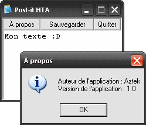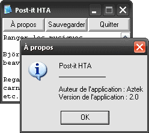
Sachez tout de même que cette correction est assez complète : l'application empêche le message d'être perdu lors de sa fermeture en vérifiant que l'utilisateur l'a préalablement enregistré, etc. De toute façon, lisez-la, comprenez-la, et tâchez de reproduire le même résultat, c'est l'essentiel. ;)
<HTML>
<HEAD>
<TITLE>Post-it HTA</TITLE>
<SCRIPT TYPE="text/javascript">
window.resizeTo(212,175);
var adresseabsolue = "c:\\post-it.txt";
var enregistre=1;
window.onbeforeunload = function before_unload()
{
if(enregistre == 0){ return "Vous avez modifié le post-it, mais ne l'avez pas encore enregistré."; }
};
</SCRIPT>
<HTA:APPLICATION ID="postit" APPLICATIONNAME="hta-post-it" SINGLEINSTANCE="Yes" VERSION="1.0" ICON="notepad.exe" MAXIMIZEBUTTON="No" SHOWINTASKBAR="No" SCROLL="No">
<SCRIPT TYPE="text/javascript">
var texte = "Auteur de l'application : Aztek\nVersion de l'application : "+postit.version;
manipuleFichiers = new ActiveXObject("Scripting.FileSystemObject");
function sauvegarder()
{
if(!manipuleFichiers.FileExists(adresseabsolue)) // Si le fichier n'existe pas, on le crée, et on recommence.
{
manipuleFichiers.CreateTextFile(adresseabsolue, 2);
sauvegarder();
}
else // Sinon, on sauvegarde directement.
{
Fichier_sauvegarder = manipuleFichiers.OpenTextFile(adresseabsolue, 2);
Fichier_sauvegarder.Write(document.getElementById("saisie").value);
Fichier_sauvegarder.close();
enregistre = 1;
return true;
}
}
function quitter() // On enregistre, puis on quitte.
{
if(sauvegarder()) window.close();
else alert("Erreur !\nVeuillez recommencer");
}
function lire() // On lit le fichier si celui-ci existe.
{
saisie.focus(); var textelu = '';
if (manipuleFichiers.FileExists(adresseabsolue))
{
taille_f = manipuleFichiers.GetFile(adresseabsolue);
if(taille_f.size!=0)
{
lecture = manipuleFichiers.OpenTextFile(adresseabsolue, 1, false)
textelu = lecture.ReadAll();
lecture.close();
}
}
document.getElementById("saisie").value=textelu;
}
</SCRIPT>
<SCRIPT TYPE="text/Vbscript">
Sub bouton_apropos_onclick()
MsgBox texte, vbInformation, "À propos"
End Sub
</SCRIPT>
<STYLE TYPE="text/css">
body{margin:0}
textarea{border:0;overflow:auto;}
input{font-size:0.7em}
</STYLE>
</HEAD>
<BODY ONLOAD="lire();">
<INPUT TYPE="button" NAME="bouton_apropos" VALUE="À propos" TITLE="À propos"><INPUT TYPE="button" NAME="monBouton" VALUE="Sauvegarder" TITLE="Sauvegarder le contenu" ONCLICK="sauvegarder();"><INPUT TYPE="button" NAME="monBouton" VALUE="Quitter" TITLE="Sauvegarder le contenu, et quitter" ONCLICK="quitter();">
<TEXTAREA STYLE="width:100%" NAME="saisie" ID="saisie" ROWS="7" ONKEYPRESS="enregistre=0;"></TEXTAREA>
</BODY>
</HTML>
<HTML>
<HEAD>
<TITLE>Post-it HTA</TITLE>
<SCRIPT TYPE="text/javascript">
window.resizeTo(221,173);
var adresseabsolue = 'c:\\post-it.txt';
var enregistre=1;
window.onbeforeunload = function before_unload()
{
if(enregistre == 0){ return "Vous avez modifié le post-it, mais ne l'avez pas encore enregistré."; }
};
</SCRIPT>
<HTA:APPLICATION ID="postit" APPLICATIONNAME="Post-it HTA" SINGLEINSTANCE="Yes" INNERBORDER="No" VERSION="2.0" ICON="notepad.exe" MAXIMIZEBUTTON="No" SHOWINTASKBAR="No" SCROLL="No">
<SCRIPT TYPE="text/javascript">
var texte = postit.APPLICATIONNAME+"\n_____________\n\nAuteur de l'application : Aztek\nVersion de l'application : "+postit.VERSION;
manipuleFichiers = new ActiveXObject('Scripting.FileSystemObject');
function sauvegarder()
{
if(!manipuleFichiers.FileExists(adresseabsolue)) // Si le fichier n'existe pas, on le créé, et on recommence.
{
manipuleFichiers.CreateTextFile(adresseabsolue, 2);
sauvegarder();
}
else // Sinon, on sauvegarde directement.
{
Fichier_sauvegarder = manipuleFichiers.OpenTextFile(adresseabsolue, 2);
Fichier_sauvegarder.Write(document.getElementById('saisie').value);
Fichier_sauvegarder.close();
enregistre = 1;
return true;
}
}
function quitter() // On enregistre, puis on quitte.
{
if(sauvegarder()) window.close();
else alert("Erreur !\nVeuillez recommencer");
}
function lire() // On lit le fichier si celui-ci existe.
{
saisie.focus(); var textelu = '';
if (manipuleFichiers.FileExists(adresseabsolue))
{
taille_f = manipuleFichiers.GetFile(adresseabsolue);
if(taille_f.size!=0)
{
lecture = manipuleFichiers.OpenTextFile(adresseabsolue, 1, false)
textelu = lecture.ReadAll();
lecture.close();
}
}
document.getElementById('saisie').value=textelu;
}
</SCRIPT>
<SCRIPT TYPE="text/Vbscript">
Sub bouton_apropos_onclick()
MsgBox texte, vbInformation, "À propos"
End Sub
</SCRIPT>
<STYLE TYPE="text/css">
body{margin:0;}
textarea{border:0;font-size:0.7em}
input{font-size:0.7em;border:outset;width:33.333%}
</STYLE>
</HEAD>
<BODY ONLOAD="lire();">
<NOBR><INPUT TYPE="button" NAME="bouton_apropos" VALUE="À propos" TITLE="À propos"><INPUT TYPE="button" NAME="monBouton" VALUE="Sauvegarder" TITLE="Sauvegarder le contenu" ONCLICK="sauvegarder();"><INPUT TYPE="button" NAME="monBouton" VALUE="Quitter" TITLE="Sauvegarder le contenu, et quitter" ONCLICK="quitter();"></NOBR>
<TEXTAREA STYLE="width:100%" NAME="saisie" ID="saisie" ROWS="8" ONKEYPRESS="enregistre=0;"></TEXTAREA>
</BODY>
</HTML>
Voilà, c'est fini ! J'ai essayé d'en mettre un maximum pour que vous puissiez avoir toujours plus de connaissances. Notez que j'ai appris en même temps que vous : je ne savais faire que le quart des choses avant d'écrire ce tutoriel.
D'ailleurs, j'espère que celui-ci vous a plu, car il m'a pris beaucoup de temps.
{kind=link}